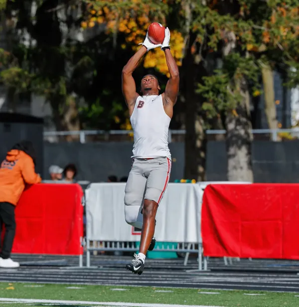
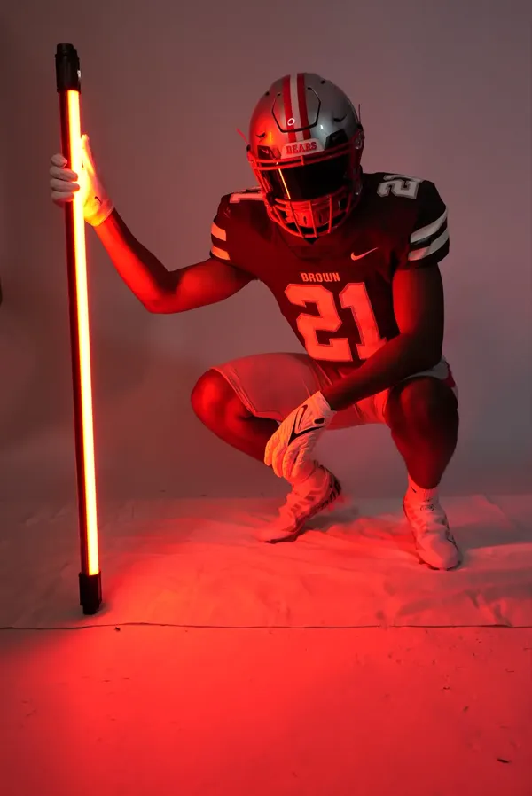
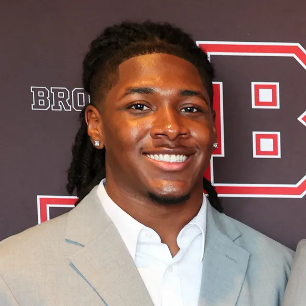

The journey
Allen, Texas to here.
St. Paul’s, two seasons of Division I football at Brown, a semester in Rome, and a company.
Timeline
-
Allen, Texas
Where it starts.
I’m from Allen, Texas.
-
St. Paul’s School · Concord, New Hampshire · Class of 2023
St. Paul’s, in New Hampshire.
I went to St. Paul’s School in Concord, New Hampshire, Class of 2023. In 2022 I was named First Team All-Evergreen Conference and All-NEPSAC Honorable Mention.
-
Brown University · NCAA Division I · August 2023 to January 2025
Two seasons at Brown.
I played defensive back for Brown from August 2023 to January 2025 while carrying a full academic load.
2024 season, brownbears.com
- 5 games
- 4.0 tackles
- 1 pass breakup


-
After sophomore year
Stopping.
I stopped playing Division I football after my sophomore year at Brown, and the thing that stayed with me was not the game but something I had noticed while I was still inside it.
-
Rome, Italy · Semester abroad
The travel was chapter one.
My summers went to finance: a search fund in 2024, then J.P. Morgan in 2025 and 2026.
I spent a semester in Rome, enrolled full time, and negotiated four brand partnerships while I was there. I kept every deal structured and in writing, and I followed through on schedule.

-
Osmo · 2026
Building Osmo.
In fall 2025 I ran 11 interviews and a 48-person student-athlete survey. In 2026 I founded Stateframe Technologies, Inc. to build Osmo for college athletes and the departments that support them.

What it taught me
The gap was not measurement. Measurement had been solved. The gap was the intervention layer, the part that tells you what to actually do once you know how you are doing. I saw it because I stood in it, before practice, with a number in front of me and nothing to do about it. Football also built the discipline and time management that shows up in every project I take on.